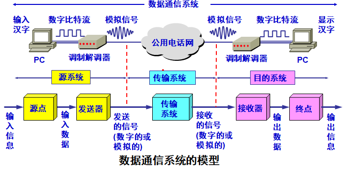
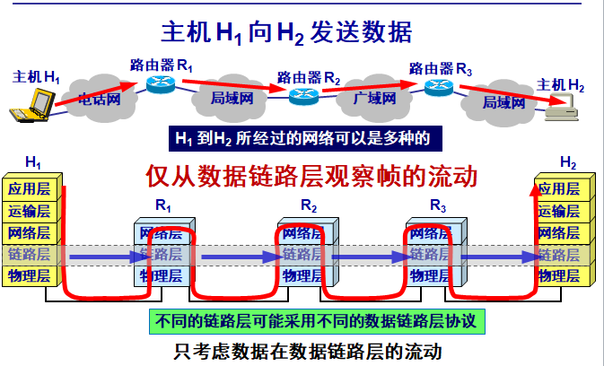
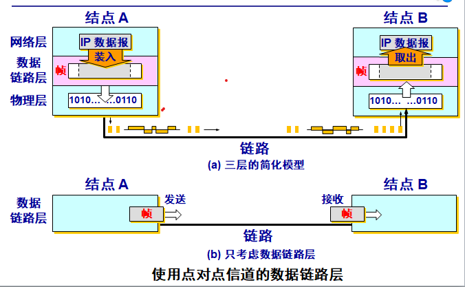

21 世纪的一些重要特征是数字化、网络化和信息化，它是一个以网络为核心的信息时代。
大众熟悉的三大类网络有： 电信网络： 提供电话、电报及传真等服务； 有线电视网络：向用户传送各种电视节目； 计算机网络：使用户能在计算机之间传送数据文件； 发展最快的并起到核心作用的是计算机网络。
从理论上讲，可以把上述三种网络融合成一种网络就能够提供所有的上述服务，这就是很早以前就提出来的“三网融合”。
互联网具有两个重要基本特点： 连通性 (connectivity) 使上网用户之间都可以交换信息（数据，以及各种音频视频） ，好像这些用户的计算机都可以彼此直接连通一样。 注意，互联网具有虚拟的特点，无法准确知道对方是谁，也无法知道对方的位置。 共享 (Sharing) 指资源共享。 资源共享的含义是多方面的。可以是信息共享、软件共享，也可以是硬件共享。 由于网络的存在，这些资源好像就在用户身边一样，方便使用。
互联网 (Internet) 特指Internet，起源于美国，现已发展成为世界上最大的、覆盖全球的计算机网络。
计算机网络 (简称为网络) 由若干结点(node)和连接这些结点的链路(link)组成。
互连网 (internetwork 或 internet) 可以通过路由器把网络互连起来，这就构成了一个覆盖范围更大的计算机网络，称之为互连网。 “网络的网络”(network of networks)。
物理层考虑的是怎样才能在连接各种计算机的传输媒体上传输数据比特流，而不是指具体的传输媒体。 物理层的作用是要尽可能地屏蔽掉不同传输媒体和通信手段的差异。
用于物理层的协议也常称为物理层规程 (procedure)。
物理层的主要任务：确定与传输媒体的接口的一些特性。 机械特性 ：指明接口所用接线器的形状和尺寸、引线数目和排列、固定和锁定装置等。 电气特性：指明在接口电缆的各条线上出现的电压的范围。 功能特性：指明某条线上出现的某一电平的电压表示何种意义。 过程特性 ：指明对于不同功能的各种可能事件的出现顺序。
一个数据通信系统包括三大部分：源系统（或发送端、发送方）、传输系统（或传输网络）和目的系统（或接收端、接收方）。 
数据链路层使用的信道主要有以下两种类型： 点对点信道。这种信道使用一对一的点对点通信方式。 广播信道。这种信道使用一对多的广播通信方式，因此过程比较复杂。广播信道上连接的主机很多，因此必须使用专用的共享信道协议来协调这些主机的数据发送。
 网际协议 IP 是 TCP/IP 体系中两个最主要的协议之一。
与 IP 协议配套使用的还有三个协议： 地址解析协议 ARP (Address Resolution Protocol) 网际控制报文协议 ICMP (Internet Control Message Protocol) 网际组管理协议 IGMP (Internet Group Management Protocol)
将网络互相连接起来要使用一些中间设备。 中间设备又称为中间系统或中继 (relay)系统。
有以下五种不同的中间设备： 物理层中继系统：转发器 (repeater)。 数据链路层中继系统：网桥 或 桥接器 (bridge)。 网络层中继系统：路由器 (router)。 网桥和路由器的混合物：桥路器 (brouter)。 网络层以上的中继系统：网关 (gateway)
网络互连都是指用路由器进行网络互连和路由选择。 由于历史的原因，许多有关 TCP/IP 的文献将网络层使用的路由器称为网关。
所谓虚拟互连网络也就是逻辑互连网络，它的意思就是互连起来的各种物理网络的异构性本来是客观存在的，但是我们利用 IP 协议就可以使这些性能各异的网络从用户看起来好像是一个统一的网络。
使用 IP 协议的虚拟互连网络可简称为 IP 网。
使用虚拟互连网络的好处是：当互联网上的主机进行通信时，就好像在一个网络上通信一样，而看不见互连的各具体的网络异构细节。
如果在这种覆盖全球的 IP 网的上层使用 TCP 协议，那么就是现在的互联网 (Internet)。
从通信和信息处理的角度看，运输层向它上面的应用层提供通信服务，它属于面向通信部分的最高层，同时也是用户功能中的最低层。
当网络的边缘部分中的两个主机使用网络的核心部分的功能进行端到端的通信时，只有位于网络边缘部分的主机的协议栈才有运输层，而网络核心部分中的路由器在转发分组时都只用到下三层的功能。
从IP层来说，通信的两端是两台主机。但“两台主机之间的通信”这种说法还不够清楚。 严格地讲，两台主机进行通信就是两台主机中的应用进程互相通信。
从运输层的角度看，通信的真正端点并不是主机而是主机中的进程。也就是说，端到端的通信是应用进程之间的通信。
屏蔽作用：运输层向高层用户屏蔽了下面网络核心的细节（如网络拓扑、所采用的路由选择协议等），它使应用进程看见的就是好像在两个运输层实体之间有一条端到端的逻辑通信信道。
TCP/IP 的运输层有两个主要协议： (1) 用户数据报协议 UDP (User Datagram Protocol) (2) 传输控制协议 TCP (Transmission Control Protocol)
应用层的许多协议都是基于客户服务器方式。客户(client)和服务器(server)都是指通信中所涉及的两个应用进程。客户服务器方式所描述的是进程之间服务和被服务的关系。客户是服务请求方，服务器是服务提供方。
许多应用层软件经常直接使用域名系统 DNS (Domain Name System)，但计算机的用户只是间接而不是直接使用域名系统。
互联网采用层次结构的命名树作为主机的名字，并使用分布式的域名系统 DNS。 名字到 IP 地址的解析是由若干个域名服务器程序完成的。域名服务器程序在专设的结点上运行，运行该程序的机器称为域名服务器。
任何一个连接在互联网上的主机或路由器，都有一个唯一的层次结构的名字，即域名。 域名的结构由标号序列组成，各标号之间用点隔开： … . 三级域名 . 二级域名 . 顶级域名 各标号分别代表不同级别的域名。
域名是个逻辑概念， 而 IP 地址是定长的 32 位二进制数字则非常便于机器进行处理。 域名中的“点”和点分十进制 IP 地址中的“点”并无一一对应的关系。点分十进制 IP 地址中一定是包含三个“点”，但每一个域名中“点”的数目则不一定正好是三个。
(1) 国家顶级域名 nTLD .cn 表示中国， .us 表示美国， .uk 表示英国，等等。
(2) 通用顶级域名 gTLD 最早的顶级域名是： .com （公司和企业） .net （网络服务机构 .org （非赢利性组织） .edu （美国专用的教育机构） .gov （美国专用的政府部门） .mil （美国专用的军事部门） .int （国际组织）
(3) 基础结构域名 (infrastructure domain) 这种顶级域名只有一个，即 arpa， 用于反向域名解析，因此又称为反向域名。
计算机网络上的通信面临以下两大类威胁：被动攻击和主动攻击。
被动攻击 指攻击者从网络上窃听他人的通信内容。 通常把这类攻击成为截获。 在被动攻击中，攻击者只是观察和分析某一个协议数据单元 PDU，以便了解所交换的数据的某种性质。但不干扰信息流。 这种被动攻击又称为流量分析 (traffic analysis)
主动攻击主要有： (1) 篡改——故意篡改网络上传送的报文。这种攻击方式有时也称为更改报文流。 (2) 恶意程序——种类繁多，对网络安全威胁较大的主要包括：计算机病毒、计算机蠕虫、特洛伊木马、逻辑炸弹、后门入侵、流氓软件等。 (3) 拒绝服务——指攻击者向互联网上的某个服务器不停地发送大量分组，使该服务器无法提供正常服务，甚至完全瘫痪。
若从互联网上的成百上千的网站集中攻击一个网站，则称为分布式拒绝服务 DDoS (Distributed Denial of Service)。 有时也把这种攻击称为网络带宽攻击或连通性攻击。
对于主动攻击，可以采取适当措施加以检测。 对于被动攻击，通常却是检测不出来的。
根据这些特点，可得出计算机网络通信安全的目标： (1) 防止析出报文内容和流量分析。 (2) 防止恶意程序。 (3) 检测更改报文流和拒绝服务。
对付被动攻击可采用各种数据加密技术。 对付主动攻击则需将加密技术与适当的鉴别技术相结合。
一个移动站若要加入到一个基本服务集 BSS，就必须先选择一个接入点 AP，并与此接入点建立关联 (association) 。 建立关联就表示这个移动站加入了选定的 AP 所属的子网，并和这个 AP 之间创建了一个虚拟线路。 只有关联的 AP 才向这个移动站发送数据帧，而这个移动站也只有通过关联的 AP 才能向其他站点发送数据帧。
被动扫描 移动站等待接收接入站周期性发出的信标帧(beacon frame)。 信标帧中包含有若干系统参数（如服务集标识符 SSID 以及支持的速率等）。
主动扫描 移动站主动发出探测请求帧(probe request frame)，然后等待从 AP 发回的探测响应帧(probe response frame)。
主动扫描移动自组网络又称为自组网络 (ad hoc network) 。 自组网络是没有固定基础设施（即没有 AP）的无线局域网。 这种网络是由一些处于平等状态的移动站之间相互通信组成的临时网络。 自组网络的服务范围通常是受限的，而且一般也不和外界的其他网络相连接。 移动自组网络也就是移动分组无线网络。
主动扫描无线传感器网络 WSN (Wireless Sensor Network) 是由大量传感器结点通过无线通信技术构成的自组网络。 无线传感器网络的应用是进行各种数据的采集、处理和传输，一般并不需要很高的带宽，但是在大部分时间必须保持低功耗，以节省电池的消耗。 由于无线传感结点的存储容量受限，因此对协议栈的大小有严格的限制。 无线传感器网络还对网络安全性、结点自动配置、网络动态重组等方面有一定的要求。
主动扫描无线传感器网络主要的应用领域就是组成各种的物联网 IoT (Internet of Things) ，例如： 环境监测与保护（如洪水预报、动物栖息的监控）； 战争中对敌情的侦查和对兵力、装备、物资等的监控； 医疗中对病房的监测和对患者的护理； 在危险的工业环境（如矿井、核电站等）中的安全监测； 城市交通管理、建筑内的温度/照明/安全控制等。